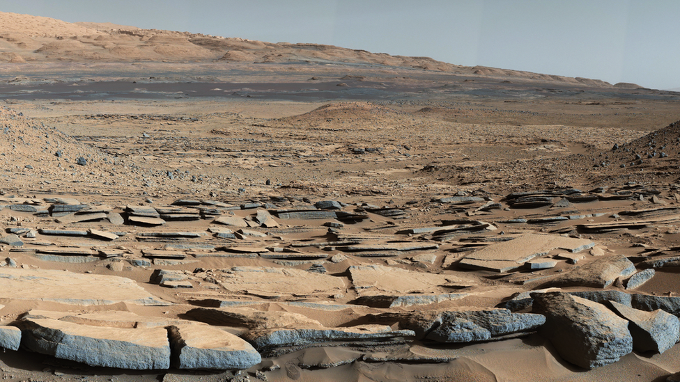

PROJECT HESTIA - THE HAB
Astrobiology Report
Executive Summary: Preliminary analysis of Martian soil samples collected from designated coordinates indicates the presence of complex organic molecules. While no definitive signs of extant life have been observed, these findings suggest that conditions on Mars may have been conducive to the development of life in the past.
Organic Molecule Concentration: The concentration of organic molecules detected in sample A-7 is significantly higher than in other samples, suggesting a potential hotspot for further investigation. The molecules identified include methane, benzene, and several amino acids.
The data presented in the graph tracks the concentrations of various organic molecules over a 20-day period (Sol 1 to Sol 20) on Mars. Methane (CH₄) shows a gradual increase, starting at 4.8 ppm and rising to 7.3 ppm. Amino acids, including glycine and alanine, also demonstrate a steady upward trend, increasing from 3.2 ppm to 5.3 ppm. Acetic acid (CH₃COOH) and formic acid (HCOOH) follow a similar trajectory, with concentrations gradually climbing from 1.1 ppm to 3.7 ppm and 0.7 ppm to 2.6 ppm, respectively. Benzene (C₆H₆) exhibits a moderate increase, starting at 0.4 ppm and reaching 2.5 ppm. Iron oxides (Fe₂O₃) remain stable, hovering around 12.7 ppm to 16.2 ppm. This data suggests a consistent presence and gradual increase in organic molecules, with a particularly notable rise in methane and amino acids, indicating ongoing Martian chemical activity.